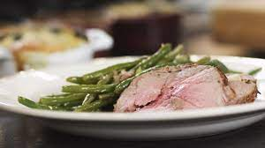

Lamsbout in de oven met gratin dauphinois

Ingredienten
- 4 teentjes look
- verse rozemarijn
- 1.5 kg lamsbout (ontbeend en opgebonden)
- peper
- zout
- boter
- 4 eetlepels honing
- 2 eetlepels graanmosterd
- 400 gram sperzieboontjes
- bicarbonaat
- 1 klontje boter
- 1 sjalot
- nootmuskaat
- natuurazijn
- 25 cl melk
- 25 cl room
- 1 takje rozemarijn
- 2 laurierblaadjes
- 2 takjes tijm
- 600 gram aardappelen (vastkokend)
- 200 gram gemalen kaas (bv. Emmentaler)
Bereiding Lamsbout
- Pel de look en snij de teentjes in plakjes.
- Pluk enkele takjses rozemarijn.
- Maak met de tip van je koksmes enkele insnijdingen in het vlees van een tweetal centimeter diep. Prop daarin telkens een plakje look en een takje rozemarijn. Tijdens het bakken zullen die aromaten hun smaak afgeven aan het vlees.
- Verwarm de oven voor op 160°C.
- Neem een braadslede en leg er de lamsbout in. Kruid het vlees met wat peper van de molen en een snuifje zout. Leg bovenop het vlees een paar (grotere) klontjes boter.
- Plaats de braadslede in de oven (160°C) en bak het vlees 50 tot 60 minuten.
- Bereid intussen het glazuur voor de lamsbout. Meng hiervoor de honing en de graanmosterd.
- Haal het vlees uit de oven en schep het glazuur van honing en mosterd er gelijkmatig overheen. Verhoog de oventemperatuur tot 180°C.
- Bak de lamsbout nog 10 tot 15 minuten in de hete oven (180°C).
- Haal het vlees uit de oven en laat het even rusten. De perfecte lamsbout is rosé (rozig) gebakken. Het vlees mag niet saignant (bloederig) zijn.
- Serveer het vlees in plakjes van zo’n halve centimeter breed.
Bereiding sperzieboontjes
- Was de sperzieboontjes en knijp de topjes eraf.
- Breng een pot met water aan de kook en voeg er wat zout en een snuifje bicarbonaat aan toe. (Het bicarbonaat zorgt ervoor dat de boontjes hun frisse groene kleur behouden.)
- Kook de boontjes beetgaar (5 tot 7 minuten) en giet het kookvocht af.
- Zet een stoofpot op een matig vuur en smelt er een klontje boter in. Snipper de sjalot fijn en stoof de stukjes glazig.
- Doe de gekookte boontjes in de stoofpot en roer ze door de hete boter. Kruid de groenten met verse nootmuskaat, peper van de molen en een snuifje zout.Voeg op het einde enkele druppels natuurazijn toe en roer de groentjes een laatste keer om.
Bereiding gratin dauphinois
- Neem een kookpot en giet er de melk en de room in. Gebruik evenveel melk als room.
- Voeg er de rozemarijn, de gekneusde en ongepelde teentjes look, de laurier en de tijm bij. Kruid het mengsel met voldoende peper van de molen, een snuif zout en vers geraspte nootmuskaat.
- Verwarm het mengsel op een zacht vuur en laat alle kruiden hun smaak afgeven aan de room en de melk. Het mengsel mag heet worden, maar het hoeft niet te koken.
- Schil de aardappelen en snij ze vervolgens in dunne plakjes van ongeveer 3 mm. Gebruik hiervoor een mandoline (snijtoestel) of snij de plakjes zorgvuldig met een scherp aardappelmesje.
- Smelt een klontje boter en smeer hiermee de binnenzijde van de vuurvaste potjes in, met behulp van een keukenpenseel. Schik in elk potje een portie aardappelschijfjes. Schrank ze over mekaar. (Vul de potjes voor ongeveer 2/3 met aardappel.)
- Zeef het mengsel van melk en room. Schenk daarvan een portie in elk potje met aardappelschijfjes. (Zodat alle aardappelschijfjes onderstaan.)
- Werk elk potje gratin af met een flinke toef gemalen kaas.
- Plaats de potjes in de oven, bij de lamsbout (160°C). Laat ze zo’n 25 à 30 minuten garen, tot er een goudbruin kaaskorstje op ligt. Elke oven is anders, dus controleer de gaarheid door met een mesje in de schijfjes aardappel te prikken.
- Serveer de potjes recht uit de oven.